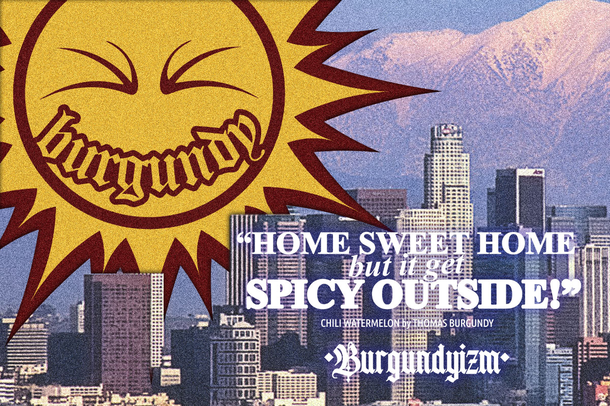

Project One
Expanding the initial vision of the owner of the Lynwood-Based clothing brand a refined and fully realized logo was achieved here at JJ.Graphics. Once complete logo with a larger more playful expansion as well as multiple simple color pairings for official business and branding use.